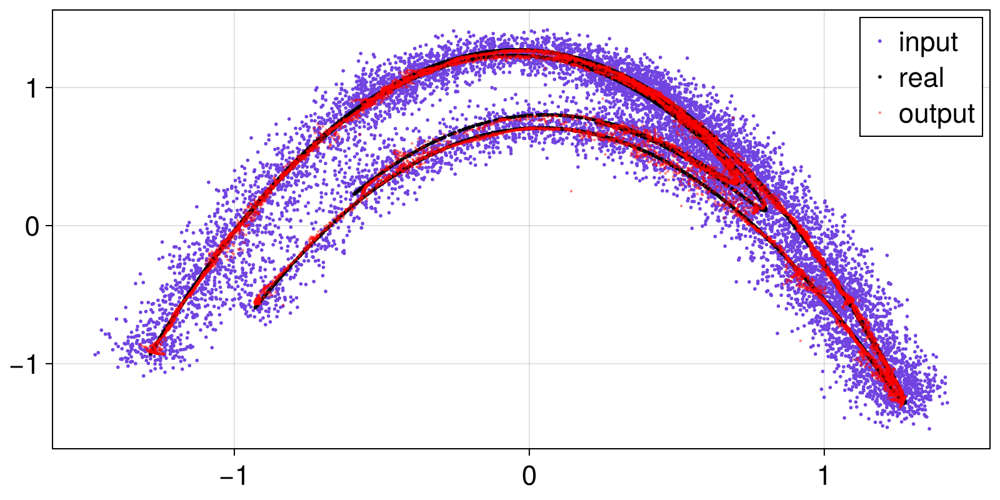
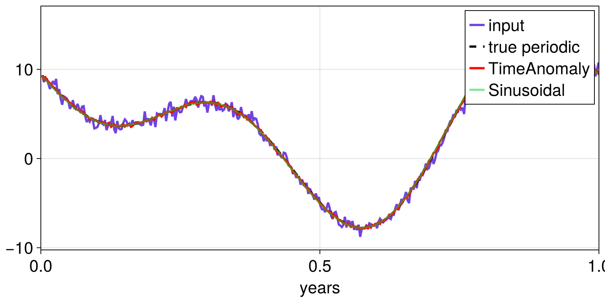
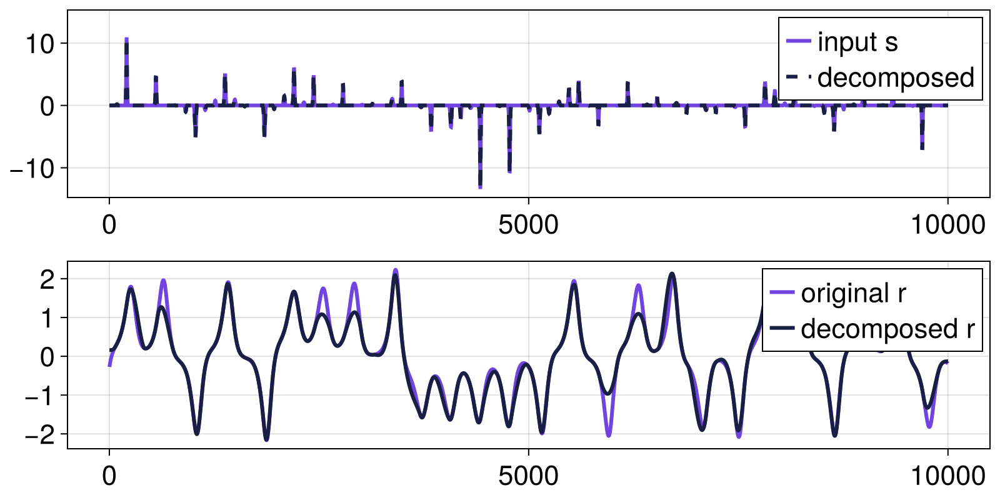

Examples
Only a few examples are shown here. Every method has an example (and plotting code) in the test folder!
Nonlinear
using SignalDecomposition, PredefinedDynamicalSystems, Random, Statistics
decompose = SignalDecomposition.decompose
he = Systems.henon()
tr, tvec = trajectory(he, 10000; Ttr = 100)
Random.seed!(151521)
z = tr[:, 1]
s = z .+ randn(10001)*0.1*std(z)
m = 5
k = 30
Q = [2, 2, 2, 3, 3, 3, 3]
x, r = decompose(s, ManifoldProjection(m, Q, k))
summary(x)"10001-element Vector{Float64}"This method is nicely highlighted once going into the state space and looking at the attractor:
using CairoMakie
fig, ax = scatter(s[1:end-1], s[2:end]; markersize = 4, label = "input")
scatter!(ax, z[1:end-1], z[2:end], markersize = 4, label = "real", color = :black)
scatter!(ax, x[1:end-1], x[2:end], markersize = 3, label = "output", alpha = 0.5, color = :red)
axislegend(ax)
fig
TimeAnomaly and Sinusoidal
using SignalDecomposition, Dates, Random, CairoMakie
Random.seed!(41516)
y = Date(2001):Day(1):Date(2025)
dy = dayofyear.(y)
cy = @. 4 + 7.2cos(2π*dy/365.26) + 5.6cos(4π*dy/365.26 + 3π/5)
r0 = randn(length(dy))/2
sy = cy .+ r0
x, r = decompose(y, sy, TimeAnomaly())
t = collect(1:length(y)) ./ 365.26 # true time in years
x2, r2 = decompose(t, sy, Sinusoidal([1.0, 2.0]))
fig, ax = lines(t, sy, label = "input")
lines!(ax, t, cy; label = "true periodic", color = :black, linestyle = :dash)
lines!(ax, t, x; label = "TimeAnomaly", alpha = 1.0, color = :red)
lines!(ax, t, x2; label = "Sinusoidal", alpha = 0.5, color = (0.1, 0.8, 0.2))
ax.xlabel = "years"
axislegend(ax)
xlims!(ax, 0, 1) # zoom in
fig
Although not immediately obvious from the figure, Sinusoidal performs better:
rmse(cy, x), rmse(cy, x2)(0.11986036248063099, 0.049787475009113534)Furthermore, by construction, the x component of Sinusoidal will always be a smooth function (sum of cosines). TimeAnomaly will typically retain some noise.
Product
using SignalDecomposition, PredefinedDynamicalSystems, CairoMakie
using Statistics: std
ds = Systems.lorenz()
tr, _ = trajectory(ds, 20; Δt = 0.002, Ttr = 100)
lorenzx_slow = tr[:, 1]/std(tr[:, 1])
ds = Systems.roessler()
tr, _ = trajectory(ds, 500.0, Δt = 0.05, Ttr = 10)
roesslerz = tr[:, 3]/std(tr[:, 3])
roesslerz[roesslerz .≤ 0.1] .= 0
s = lorenzx_slow .* roesslerz
m = ProductInversion(roesslerz, 0.1:0.1:10)
x, r = decompose(s, m)
fig, ax = lines(s, label = "input s")
lines!(ax, x .* r, label = "decomposed", linestyle = :dash)
axislegend(ax)
ax, = lines(fig[2,1], lorenzx_slow, label = "original r")
lines!(ax, x, label = "decomposed r")
axislegend(ax)
fig